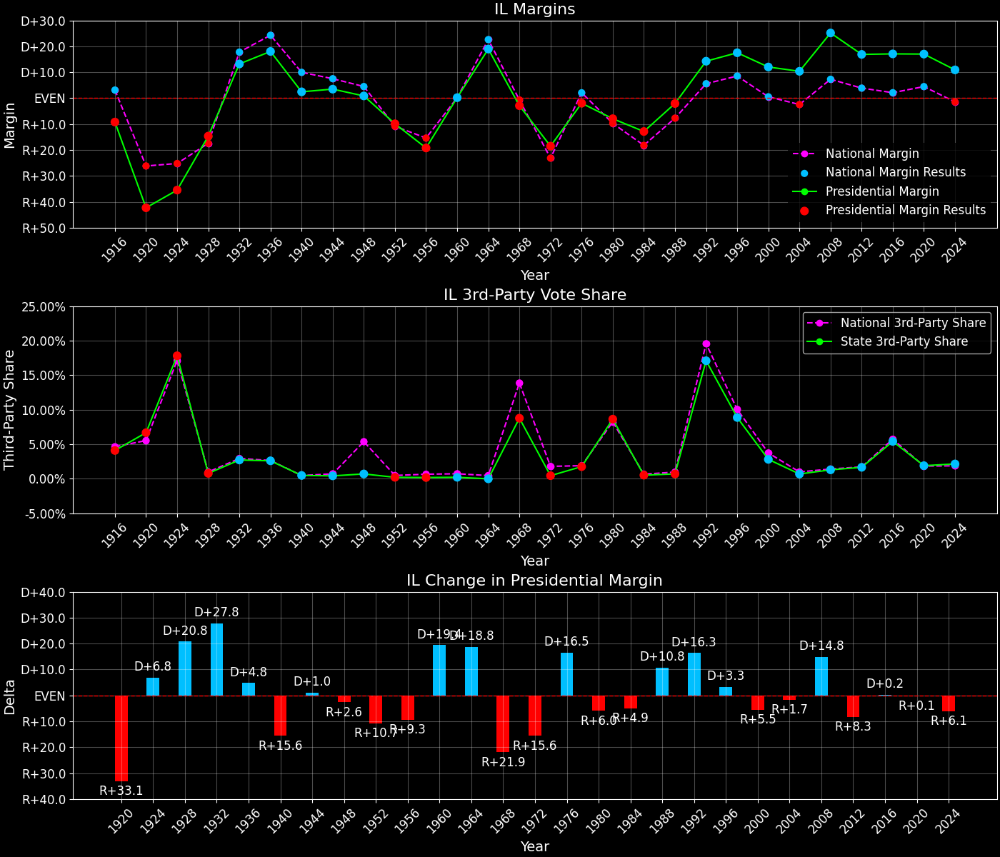
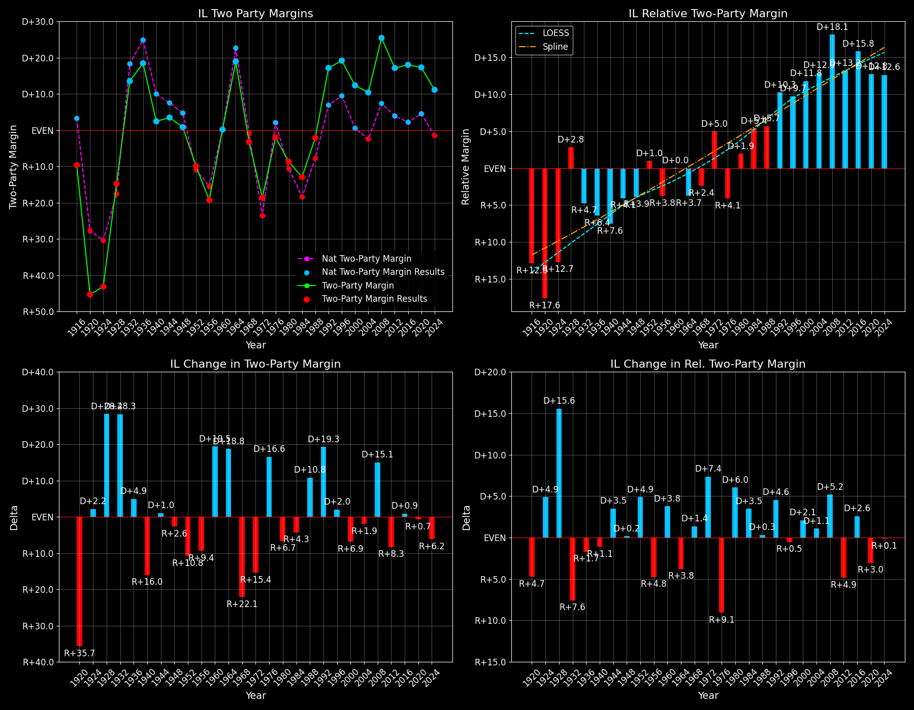

Illinois (IL) — Statewide

Margins · 3rd-Party share · Pres. deltas

Relative margins · Relative 3rd-Party · Rel. deltas
Illinois (IL) — Total Data
| Year | EVs | D | R | State Margin | Nat. Margin | Rel. Margin | Total votes |
|---|---|---|---|---|---|---|---|
| 1968 | 26 | 2,039,814(44.5%) | 2,174,844(47.4%) | R+2.9 | R+0.6 | R+2.4 | 4,588,735 |
| 1972 | 26 | 1,913,961(41.0%) | 2,750,412(59.0%) | R+17.9(Δ R+15.0) | R+23.5(Δ R+23.0) | D+5.6(Δ D+8.0) | 4,664,373 |
| 1976 | 26 | 2,253,772(49.0%) | 2,345,920(51.0%) | R+2.0(Δ D+15.9) | D+2.2(Δ D+25.7) | R+4.2(Δ R+9.8) | 4,599,692 |
| 1980 | 26 | 2,038,657(41.5%) | 2,511,462(51.2%) | R+9.6(Δ R+7.6) | R+9.9(Δ R+12.1) | D+0.3(Δ D+4.5) | 4,909,959 |
| 1984 | 24 | 2,167,082(46.1%) | 2,536,919(53.9%) | R+7.9(Δ D+1.8) | R+18.1(Δ R+8.2) | D+10.3(Δ D+10.0) | 4,704,001 |
| 1988 | 24 | 2,215,940(49.0%) | 2,310,899(51.0%) | R+2.1(Δ D+5.8) | R+7.7(Δ D+10.4) | D+5.6(Δ R+4.6) | 4,526,839 |
| 1992 | 22 | 2,457,602(48.9%) | 1,729,844(34.4%) | D+14.5(Δ D+16.6) | D+5.6(Δ D+13.3) | D+8.9(Δ D+3.2) | 5,027,961 |
| 1996 | 22 | 2,341,744(54.8%) | 1,587,021(37.1%) | D+17.7(Δ D+3.2) | D+8.6(Δ D+3.0) | D+9.1(Δ D+0.2) | 4,275,173 |
| 2000 | 22 | 2,589,059(54.6%) | 2,019,432(42.6%) | D+12.0(Δ R+5.6) | D+0.5(Δ R+8.0) | D+11.5(Δ D+2.4) | 4,740,608 |
| 2004 | 21 | 2,890,008(55.0%) | 2,344,503(44.6%) | D+10.4(Δ R+1.6) | R+2.5(Δ R+3.0) | D+12.8(Δ D+1.3) | 5,252,660 |
| 2008 | 21 | 3,419,232(61.9%) | 2,030,959(36.8%) | D+25.1(Δ D+14.8) | D+7.3(Δ D+9.7) | D+17.9(Δ D+5.0) | 5,521,528 |
| 2012 | 20 | 3,019,511(57.6%) | 2,135,216(40.7%) | D+16.9(Δ R+8.3) | D+3.9(Δ R+3.4) | D+13.0(Δ R+4.9) | 5,241,178 |
| 2016 | 20 | 3,090,728(56.0%) | 2,146,016(38.9%) | D+17.1(Δ D+0.2) | D+2.1(Δ R+1.8) | D+15.0(Δ D+2.0) | 5,523,142 |
| 2020 | 20 | 3,479,871(57.5%) | 2,464,506(40.7%) | D+16.8(Δ R+0.3) | D+4.4(Δ D+2.3) | D+12.3(Δ R+2.7) | 6,057,201 |
| 2024 | 19 | 3,062,863(54.4%) | 2,449,079(43.5%) | D+10.9(Δ R+5.9) | R+1.5(Δ R+6.0) | D+12.4(Δ D+0.1) | 5,633,310 |
Column explanations
- Δ
- Change (delta) in the value from the previous election year.
- Year
- Election year.
- EVs
- Number of electoral votes allocated to this state or unit.
- D
- Number of votes for the Democratic candidate (raw count(pct%)).
- R
- Number of votes for the Republican candidate (raw count(pct%)).
- State Margin
- Margin between the two major-party candidates, including third-party votes ((D - R)/total).
- Nat. Margin
- The national presidential margin for that year, including third-party votes ((D_total - R_total)/total_votes).
- Rel. Margin
- The presidential margin relative to the national presidential margin (Margin - Nat. Margin).
- Total votes
- Total voter turnout or ballots cast (when provided).
Illinois (IL) — Third-Party Data
| Year | D | R | Other votes | State 3rd-Party Share | 3rd-Party Nat. Share | 3rd-Party Rel. Share |
|---|---|---|---|---|---|---|
| 1968 | 2,039,814(44.5%) | 2,174,844(47.4%) | 374,077(8.2%) | 8.15% | 13.59% | -5.43% |
| 1972 | 1,913,961(41.0%) | 2,750,412(59.0%) | 0(0.0%) | 0.00% | 0.09% | -0.09% |
| 1976 | 2,253,772(49.0%) | 2,345,920(51.0%) | 0(0.0%) | 0.00% | 0.33% | -0.33% |
| 1980 | 2,038,657(41.5%) | 2,511,462(51.2%) | 359,840(7.3%) | 7.33% | 6.98% | 0.35% |
| 1984 | 2,167,082(46.1%) | 2,536,919(53.9%) | 0(0.0%) | 0.00% | 0.12% | -0.12% |
| 1988 | 2,215,940(49.0%) | 2,310,899(51.0%) | 0(0.0%) | 0.00% | 0.21% | -0.21% |
| 1992 | 2,457,602(48.9%) | 1,729,844(34.4%) | 840,515(16.7%) | 16.72% | 19.23% | -2.51% |
| 1996 | 2,341,744(54.8%) | 1,587,021(37.1%) | 346,408(8.1%) | 8.10% | 9.68% | -1.58% |
| 2000 | 2,589,059(54.6%) | 2,019,432(42.6%) | 132,117(2.8%) | 2.79% | 3.65% | -0.86% |
| 2004 | 2,890,008(55.0%) | 2,344,503(44.6%) | 18,149(0.3%) | 0.35% | 0.84% | -0.49% |
| 2008 | 3,419,232(61.9%) | 2,030,959(36.8%) | 71,337(1.3%) | 1.29% | 1.38% | -0.09% |
| 2012 | 3,019,511(57.6%) | 2,135,216(40.7%) | 86,451(1.6%) | 1.65% | 1.62% | 0.03% |
| 2016 | 3,090,728(56.0%) | 2,146,016(38.9%) | 286,398(5.2%) | 5.19% | 5.54% | -0.35% |
| 2020 | 3,479,871(57.5%) | 2,464,506(40.7%) | 112,824(1.9%) | 1.86% | 1.84% | 0.02% |
| 2024 | 3,062,863(54.4%) | 2,449,079(43.5%) | 121,368(2.2%) | 2.15% | 1.88% | 0.27% |
Column explanations
- Year
- Election year.
- D
- Number of votes for the Democratic candidate (raw count(pct%)).
- R
- Number of votes for the Republican candidate (raw count(pct%)).
- Other votes
- Number of votes for third-party (other) candidates (raw count(pct%)).
- State 3rd-Party Share
- Share of the vote received by third-party (other) candidates.
- 3rd-Party Nat. Share
- The national third-party share for that year (3rd-Party votes / total votes).
- 3rd-Party Rel. Share
- Third-party share relative to the national third-party share (3rd-Party share - Nat. 3rd-Party share).

Two-party margins · relative · deltas
Illinois (IL) — Two-Party Data
| Year | EVs | D | R | 2-Party Margin | 2-Party Nat. Margin | 2-Party Rel. Margin |
|---|---|---|---|---|---|---|
| 1968 | 26 | 2,039,814(48.4%) | 2,174,844(51.6%) | R+3.2 | R+0.7 | R+2.5 |
| 1972 | 26 | 1,913,961(41.0%) | 2,750,412(59.0%) | R+17.9(Δ R+14.7) | R+23.6(Δ R+22.9) | D+5.6(Δ D+8.2) |
| 1976 | 26 | 2,253,772(49.0%) | 2,345,920(51.0%) | R+2.0(Δ D+15.9) | D+2.2(Δ D+25.8) | R+4.2(Δ R+9.8) |
| 1980 | 26 | 2,038,657(44.8%) | 2,511,462(55.2%) | R+10.4(Δ R+8.4) | R+10.6(Δ R+12.8) | D+0.2(Δ D+4.5) |
| 1984 | 24 | 2,167,082(46.1%) | 2,536,919(53.9%) | R+7.9(Δ D+2.5) | R+18.1(Δ R+7.5) | D+10.3(Δ D+10.0) |
| 1988 | 24 | 2,215,940(49.0%) | 2,310,899(51.0%) | R+2.1(Δ D+5.8) | R+7.8(Δ D+10.4) | D+5.7(Δ R+4.6) |
| 1992 | 22 | 2,457,602(58.7%) | 1,729,844(41.3%) | D+17.4(Δ D+19.5) | D+6.9(Δ D+14.7) | D+10.5(Δ D+4.8) |
| 1996 | 22 | 2,341,744(59.6%) | 1,587,021(40.4%) | D+19.2(Δ D+1.8) | D+9.5(Δ D+2.6) | D+9.7(Δ R+0.7) |
| 2000 | 22 | 2,589,059(56.2%) | 2,019,432(43.8%) | D+12.4(Δ R+6.8) | D+0.5(Δ R+8.9) | D+11.8(Δ D+2.1) |
| 2004 | 21 | 2,890,008(55.2%) | 2,344,503(44.8%) | D+10.4(Δ R+1.9) | R+2.5(Δ R+3.0) | D+12.9(Δ D+1.1) |
| 2008 | 21 | 3,419,232(62.7%) | 2,030,959(37.3%) | D+25.5(Δ D+15.1) | D+7.4(Δ D+9.8) | D+18.1(Δ D+5.2) |
| 2012 | 20 | 3,019,511(58.6%) | 2,135,216(41.4%) | D+17.2(Δ R+8.3) | D+3.9(Δ R+3.4) | D+13.2(Δ R+4.9) |
| 2016 | 20 | 3,090,728(59.0%) | 2,146,016(41.0%) | D+18.0(Δ D+0.9) | D+2.2(Δ R+1.7) | D+15.8(Δ D+2.6) |
| 2020 | 20 | 3,479,871(58.5%) | 2,464,506(41.5%) | D+17.1(Δ R+1.0) | D+4.5(Δ D+2.3) | D+12.6(Δ R+3.3) |
| 2024 | 19 | 3,062,863(55.6%) | 2,449,079(44.4%) | D+11.1(Δ R+5.9) | R+1.6(Δ R+6.1) | D+12.7(Δ D+0.2) |
Column explanations
- Δ
- Change (delta) in the value from the previous election year.
- Year
- Election year.
- EVs
- Number of electoral votes allocated to this state or unit.
- D
- Number of votes for the Democratic candidate (raw count(pct%)).
- R
- Number of votes for the Republican candidate (raw count(pct%)).
- 2-Party Margin
- Margin between the two major-party candidates, ignoring third-party votes ((D - R)/(D + R)).
- 2-Party Nat. Margin
- The national presidential margin for that year, including third-party votes ((D_total - R_total)/total_votes).
- 2-Party Rel. Margin
- The presidential margin relative to the national presidential margin (Margin - Nat. Margin).